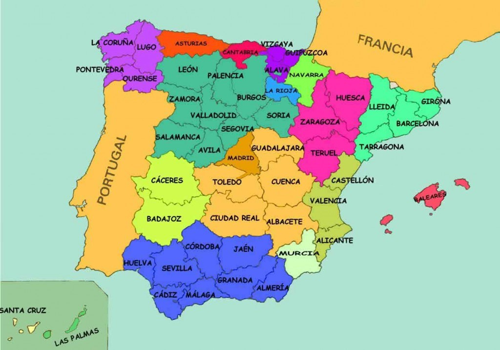

Toma el mapa de las provincias de España y añade 5 monumentos patrimonio de la humanidad, uno a cada PROVINCIA. Puedes utilizar la herramienta https://www.image-map.net/ para indicar la forma del área a destacar. Aparecerá el nombre del monumento y se accederá a una página donde se muestre información sobre él.
| Anterior | Inicio | Siguiente |